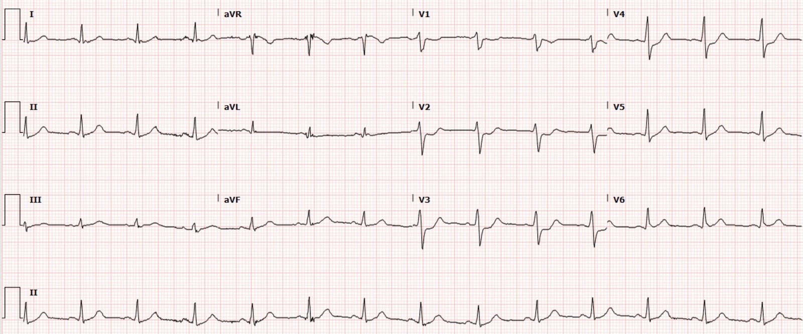
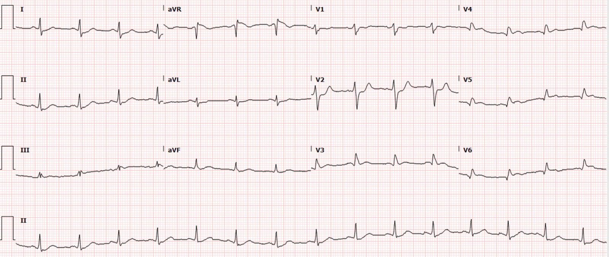
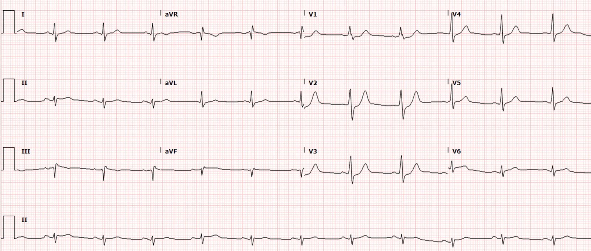
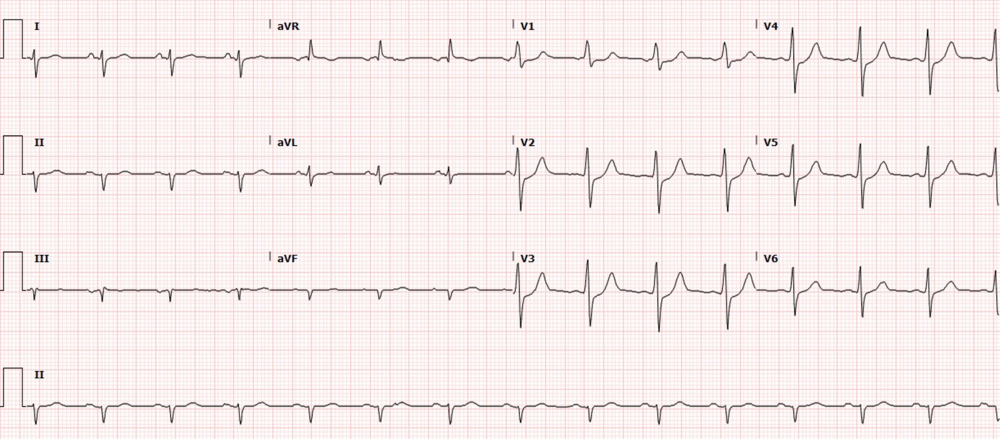
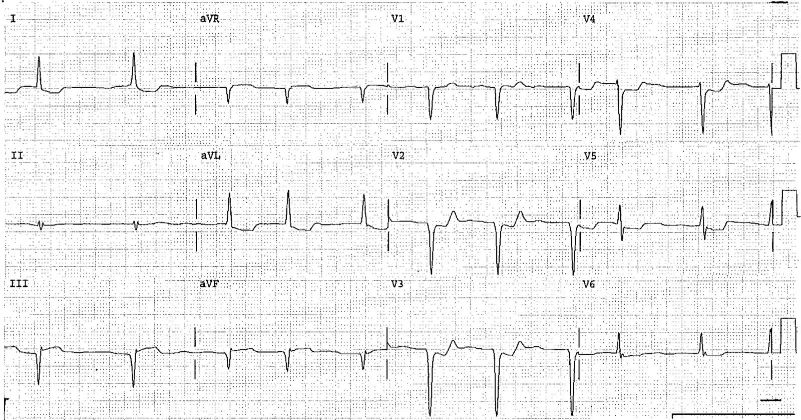
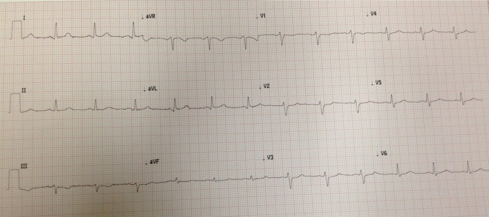

14/02/2021 — Một người đàn ông ngoài 40 tuổi bị đau ngực: ST chênh xuống ở V1-V4, nhưng chuyển đạo phía sau âm tính
Bản dịch tiếng Việt của bài "A man in his early 40s with chest pain: STD in V1-V4, but posterior lead are negative" – Dr. Smith’s ECG Blog. Giữ nguyên toàn bộ 7 hình ảnh của bản gốc.
Tác giả: Pendell Meyers
Một người đàn ông ngoài 40 tuổi, có tăng lipid máu và tiền sử gia đình nhồi máu cơ tim, đến viện lúc 545 sáng vì đau ngực sau xương ức khởi phát cấp tính kèm buồn nôn và vã mồ hôi. Anh cho biết cơn đau bắt đầu lúc 8 giờ tối hôm trước, và không rõ cơn đau liên tục hay từng đợt suốt đêm, nhưng vợ anh đã thuyết phục anh đến khoa cấp cứu (ED).
Điện tâm đồ lúc phân loại (triage) của anh được ghi lúc 0550 (không có bản ghi cũ để so sánh):


Có ST chênh xuống (STD) ở các chuyển đạo trước tim, rõ nhất ở V2-V4. Không hề có ST chênh lên (STE) ở bất kỳ đâu trên điện tâm đồ.
Đây lại thêm một điện tâm đồ chẩn đoán OMI thành sau, với STD có mặt từ V1-V5 và rõ nhất ở V2-V4. Nếu bạn đã đọc blog này một thời gian, bạn hẳn đã thấy vô số ca y hệt ca này, và bạn sẽ thấy lặp đi lặp lại một khuôn mẫu: những bệnh nhân này rất khó được nhận ra là OMI và được tái tưới máu cấp cứu.
Bình luận của Smith về thuật ngữ nhồi máu cơ tim thành sau: Thành sau đã được xếp lại thành một phần của thành bên, nhưng chúng tôi vẫn tiếp tục gọi phần cơ tim thành bên không đối diện với bất kỳ chuyển đạo nào của điện tâm đồ 12 chuyển đạo chuẩn là thành sau.(Bayes de Luna)
—-Bayes de Luna A, Zareba W. New terminology of the cardiac walls and new classification of Q-wave M infarction based on cardiac magnetic resonance correlations. Tạp chí Ann Noninvasive Electrocardiol [Internet], 2007;12(1):1–4. Truy cập tại: http://www.ncbi.nlm.nih.gov/entrez/query.fcgi?cmd=Retrieve&db=PubMed&dopt=Citation&list_uids=17286644
Ca bệnh tiếp diễn
Điện tâm đồ này không được nhận ra là OMI, mà được đọc là “ST chênh xuống”. Bệnh nhân được chỉ định làm các xét nghiệm đánh giá đau ngực thông thường.
Khoảng 0730, kết quả troponin I độ nhạy cao đầu tiên trả về >25,000 ng/L (giới hạn báo cáo trên của phòng xét nghiệm, và phù hợp với một OMI rất lớn).
Hồ sơ ghi chép không rõ bệnh nhân có còn đau liên tục kể từ lúc phân loại hay không. Để đáp lại kết quả troponin, một điện tâm đồ khác được ghi lúc 0744, lần này có chuyển đạo phía sau (không rõ chuyển đạo nào được dùng làm chuyển đạo phía sau, hay chúng được đặt ở đâu, nhưng có vẻ V4-V6 nhiều khả năng là V7-V9):


OMI thành sau đang diễn ra thể hiện rõ qua STD tồn tại dai dẳng ở V1-V2. Có thoáng chút STE ở V4-V6, nhưng phần lớn bác sĩ tim mạch sẽ nói rằng nó không đạt tiêu chuẩn của chuyển đạo phía sau (0.5mm chỉ ở một chuyển đạo).
Bình luận của Smith: Cũng hãy chú ý rằng ST chênh xuống ở V2 vẫn còn. Điều này quan trọng để xác nhận giá trị của chuyển đạo phía sau. Đôi khi, chuyển đạo phía sau được ghi muộn hơn, sau khi đã có tái tưới máu tự phát (không ghi đồng thời). Để đánh giá chuyển đạo phía sau trong tương quan với STD phía trước, cần phải chắc chắn rằng STD đã khiến người ta ghi chuyển đạo phía sau vẫn còn hiện diện.
Đây chính xác là vấn đề của chuyển đạo phía sau. Những người nhìn ra OMI thành sau trên điện tâm đồ 12 chuyển đạo chuẩn thì không cần chuyển đạo phía sau, còn những người không nhìn ra OMI thành sau trên 12 chuyển đạo chuẩn thì có thể bị chuyển đạo phía sau đánh lừa vì điện thế của chúng rất thấp. Rốt cuộc, chuyển đạo phía sau không giúp cải thiện việc ra quyết định của người nào trong cả hai.
Trên blog này, chúng tôi không có ca nào mà chuyển đạo phía sau thực sự giúp ích khi 12 chuyển đạo chuẩn không có STD rõ nhất ở V1-V4. Ngay cả khi chuyển đạo phía sau có cho thấy STE rất nhỏ phù hợp với STD rõ nhất ở V1-V4, điện thế nhỏ hơn ở chuyển đạo phía sau khiến mức STE rất, rất nhỏ, nhỏ đến mức người đọc báo cáo rằng hoàn toàn không có STE.
Bình luận của Smith: Chuyển đạo phía sau có thể có ích nếu điện tâm đồ 12 chuyển đạo chuẩn không có giá trị chẩn đoán. Có y văn ủng hộ điều này (xem phần y văn về chuyển đạo phía sau bên dưới). Tuy nhiên, y văn đó luôn đòi hỏi ít nhất 1 mm ST chênh xuống ở 2 chuyển đạo trước tim liên tiếp để chẩn đoán nhồi máu cơ tim thành sau. Nếu không đạt mức đó, điện tâm đồ được xem là không có giá trị chẩn đoán. Nhưng thực tế, nhiều điện tâm đồ có ST chênh xuống rất ít ở V2 và V3 vẫn có giá trị chẩn đoán. Đó là vì V2 và V3 bình thường có ST chênh lên ở mức nền. BẤT KỲ MỨC ST chênh xuống nào ở 2 chuyển đạo này đều là bất thường. Vì vậy, nhiều điện tâm đồ 12 chuyển đạo “không có giá trị chẩn đoán” thực ra lại có giá trị chẩn đoán. (Tôi thường nói rằng “Không phải điện tâm đồ không có giá trị chẩn đoán; mà là người đọc.) Xem ví dụ điện tâm đồ có STD rất nhỏ ở cuối bài.
Ca bệnh tiếp diễn
Siêu âm tại giường ở khoa cấp cứu: “rối loạn vận động thành dưới-bên.”
Bệnh nhân được đưa đi thông tim vào khoảng 0900 (hơn 3 giờ sau khi đến khoa cấp cứu). Phát hiện tắc LCx đoạn gần (100%, TIMI 0) và đã được đặt stent.
Kết quả troponin thứ hai cũng là >25,000 ng/L, và không chỉ định thêm xét nghiệm troponin nào nữa.
Đây là điện tâm đồ sau thông tim:


2 ngày sau:




Những điểm cần học:
Dấu hiệu quan trọng nhất và có tính lặp lại cao nhất của OMI thành sau trên điện tâm đồ 12 chuyển đạo chuẩn là ST chênh xuống rõ nhất ở V1-V4. Chúng tôi hiện đang nghiên cứu điều này, đã công bố dưới dạng tóm tắt, và đang viết bản thảo đầy đủ. Chúng tôi không ghi chuyển đạo phía sau trong nghiên cứu, nhưng chúng tôi thấy rằng ST chênh xuống rõ nhất ở V1-V4 có độ đặc hiệu 88% đối với OMI.
Xem các ca OMI thành sau khác dưới đây, nhiều ca đã bị bỏ sót, và một số ca đã tử vong:
Cardiologist declines taking patient to the cath lab. Patient dies. (Bác sĩ tim mạch từ chối đưa bệnh nhân vào phòng thông tim. Bệnh nhân tử vong.)
Interventionalist at the Receiving Hospital: “No STEMI, no cath. I do not accept the transfer.” (Bác sĩ can thiệp ở bệnh viện tiếp nhận: “Không có STEMI thì không thông tim. Tôi không nhận chuyển viện.”)
“It isn’t a STEMI,” so cath lab refusal (again). Were they right? (“Đây không phải STEMI”, nên phòng thông tim từ chối (lại nữa). Họ có đúng không?)
A middle aged man with ST depression and a narrow window of opportunity (Một người đàn ông trung niên có ST chênh xuống và một cửa sổ cơ hội hẹp)
A man in his 50s with 2 hours of chest pressure (Một người đàn ông năm mươi mấy tuổi bị tức ngực hai giờ)
A woman in her 70s with bradycardia and hypotension (Một phụ nữ bảy mươi mấy tuổi bị nhịp chậm và hạ huyết áp)
You have two hours to save this patient’s life (Bạn có hai giờ để cứu sống bệnh nhân này)
A man in his early sixties with palpitations (Một người đàn ông ngoài sáu mươi tuổi bị hồi hộp đánh trống ngực)
A female in her 60s with sudden chest pressure (Một phụ nữ sáu mươi mấy tuổi bị tức ngực đột ngột)
How much time are you willing to wait for OMI to become STEMI (if it ever does)? (Bạn sẵn lòng chờ bao lâu để OMI trở thành STEMI (nếu nó có bao giờ trở thành)?)
Chest pain and Concordant ST Depression in a patient with aortic valve and previously normal angiogram (Đau ngực và ST chênh xuống đồng hướng ở một bệnh nhân có van động mạch chủ và kết quả chụp mạch vành trước đây bình thường)
Right Bundle Branch Block and ST Depression in V1-V3. Is that normal? And a complication. (Blốc nhánh phải và ST chênh xuống ở V1-V3. Như vậy có bình thường không? Và một biến chứng.)

Xem ca nhồi máu cơ tim thành sau có ST chênh xuống rất nhỏ này:


Điện tâm đồ này được nhắn tin cho Dr. Smith kèm dòng “46 tuổi, đau ngực”.
Ông nhắn lại: “OMI sau-bên, kích hoạt phòng thông tim”.
Điện tâm đồ này có giá trị chẩn đoán vì V2 và V3 có một lượng rất nhỏ ST chênh xuống lẽ ra không được có ở đó, VÀ cũng có một lượng STD rất nhỏ ở III và aVF, là thay đổi soi gương (reciprocal) của một lượng STE rất nhỏ ở aVL. Và tất cả khớp với nhau thành một OMI sau-bên. Thông tim cho thấy tắc nhánh bờ tù 100% và troponin I đỉnh là 85 ng/mL, một OMI rất lớn.
Bàn luận thêm của Smith về chuyển đạo phía sau
Đây là một thư gửi Tòa soạn, là một bài tổng quan rất hay: Wong C-K. Usefulness of leads V7, V8, and V9 ST elevation to diagnose isolated posterior myocardial infarction. Tạp chí Int J Cardiol [Internet], 2011;146(3):467–9. Truy cập tại: http://dx.doi.org/10.1016/j.ijcard.2010.10.137
2 nghiên cứu của Matetzky dưới đây là bằng chứng tốt nhất trước đây về chuyển đạo phía sau so với ST chênh xuống ở V1-V4. Các nghiên cứu so sánh 2 vị trí chuyển đạo này so 1 mm ST chênh xuống ở V1-V4 với 0.5 mm STE ở chuyển đạo phía sau (thực ra, chỉ một trong 2 nghiên cứu nêu rõ mức ST chênh xuống và số chuyển đạo). Điều này bỏ qua thực tế là hầu hết mọi người có ít nhất 1 mm STE ở mức nền tại chuyển đạo V2 và V3. Vì vậy, BẤT KỲ mức ST chênh xuống nào ở V2 hoặc V3 đều là bất thường: đòi hỏi 1 mm STD ở các chuyển đạo này sẽ dẫn tới độ nhạy kém.
Vì vậy, cách thực hành của tôi như sau: nếu có STD ở bất kỳ mức nào và rõ nhất ở V1-V4, đặc biệt là V2 và V3, tôi sẽ không để việc không có STE ở chuyển đạo phía sau khiến tôi từ bỏ chẩn đoán OMI thành sau. Người ta có thể dùng chuyển đạo phía sau để phát hiện ST chênh xuống ở các chuyển đạo đó, điều sẽ ủng hộ khả năng (ít có) rằng ST chênh xuống ở V1-V4 là do thiếu máu cục bộ dưới nội tâm mạc.(Wong)
Điện tâm đồ nền có STE ở V2, V3 (Surawicz, Macfarlane):
Surawicz B, Parikh SR. Prevalence of male and female patterns of early ventricular repolarization in the normal ECG of males and females from childhood to old age. Tạp chí J Am Coll Cardiol [Internet], 2002;40(10):1870–6. Truy cập tại: http://www.ncbi.nlm.nih.gov/entrez/query.fcgi?cmd=Retrieve&db=PubMed&dopt=Citation&list_uids=12446073.
Macfarlane PW, Browne D, Devine B, và cs. Modification of ACC/ESC criteria for acute myocardial infarction. Tạp chí J Electrocardiol [Internet], 2004;37 Suppl:98–103. Truy cập tại: http://www.ncbi.nlm.nih.gov/entrez/query.fcgi?cmd=Retrieve&db=PubMed&dopt=Citation&list_uids=15534817
Nghiên cứu này của Shah và cs. cho thấy STD do thiếu máu cục bộ dưới nội tâm mạc (trái ngược với OMI thành sau) rõ nhất ở V5 và V6.
Shah A, Wagner GS, Green CL, và cs. Electrocardiographic differentiation of the ST-segment depression of acute myocardial injury due to the left circumflex artery occlusion from that of myocardial ischemia of nonocclusive etiologies. Tạp chí Am J Cardiol [Internet], 1997;80(4):512–3. Truy cập tại: https://europepmc.org/article/med/9285669
Tuy nhiên, STD ở V1-V4 đôi khi có thể do thiếu máu cục bộ dưới nội tâm mạc.
Poh K-K, Chia B-L, Tan H-C, Yeo T-C, Lim Y-T. Absence of ST elevation in ECG leads V7, V8, V9 in ischaemia of non-occlusive aetiologies. Tạp chí Int J Cardiol [Internet], 2004;97(3):389–92. Truy cập tại: http://dx.doi.org/10.1016/j.ijcard.2003.10.022. Các tác giả này đã nghiên cứu 35 bệnh nhân có ST chênh xuống khi làm nghiệm pháp gắng sức. Không ai có ST chênh lên ở chuyển đạo phía sau và nhiều người có ST chênh xuống ở chuyển đạo phía sau.
Vì vậy, nếu chuyển đạo phía sau cũng cho thấy ST chênh xuống, thì nhiều khả năng là thiếu máu cục bộ dưới nội tâm mạc!! Bài tổng quan này ủng hộ rằng, nếu là thiếu máu cục bộ dưới nội tâm mạc, nó sẽ biểu hiện bằng STD ở chuyển đạo phía sau bên cạnh các chuyển đạo phía trước. Thiếu máu cục bộ dưới nội tâm mạc có tính lan tỏa, với ST chênh xuống hướng ra ngoài từ mọi thành tim, ngoại trừ “đáy” tim, nơi không có thành, và do đó véc-tơ ST chênh xuống tổng hợp hướng về phía mỏm tim (V5, V6)
Nghiên cứu Matetzky-1:
Matetzky S, Friemark D, Feinberg MS. Acute myocardial infarction with isolated ST-segment elevation in posterior chest leads V7-V9: “hidden” ST-segment elevations revealing acute posterior infarction. Tạp chí J Am Coll Cardiol, 1999;34(3):748–53.
33 bệnh nhân đã được chứng minh có OMI thành sau. Điện tâm đồ lúc nhập viện. ST chênh lên có ở chuyển đạo V7 và V9 ở 30 bệnh nhân (91%) và ở cả 33 bệnh nhân tại chuyển đạo V8. ST chênh xuống (ST2) được ghi nhận ở chuyển đạo V1 đến V3 ở 20 bệnh nhân (61%), và ở 22 bệnh nhân (67%) tại ít nhất hai chuyển đạo liên tiếp trong các chuyển đạo ngực phía trước V1 đến V6 (Hình 1A và 2). Sóng R nổi bật xuất hiện ở chuyển đạo V1 ở 3 bệnh nhân (9%) và ở chuyển đạo V2 ở 14 bệnh nhân (44%). Phương pháp đo STD không được nêu rõ.
Nghiên cứu Matetzky-2:
Matetzky S, Freimark D, Chouraqui P. Significance of ST segment elevations in posterior chest leads (V7-V9) in patients with acute inferior myocardial infarction: application for thrombolytic therapy. Tạp chí J Am Coll Cardiol, 1998;31(3):506–11.
46 trong số 87 ca nhồi máu cơ tim thành dưới có ghi chuyển đạo phía sau có ST chênh lên ở chuyển đạo phía sau ít nhất 0.5 mm ở 2 chuyển đạo liên tiếp trong V7-V9.
Kết quả:
So sánh ST chênh lên ở chuyển đạo V7 đến V9 và ST chênh xuống ở chuyển đạo V1 đến V3. ST chênh xuống có ý nghĩa ở chuyển đạo V1 đến V3 được ghi nhận ở 52 bệnh nhân (60%). Sự xuất hiện ST chênh xuống ở các chuyển đạo trước tim chỉ phù hợp một phần với sự xuất hiện ST chênh lên ở các chuyển đạo ngực phía sau. Ở 10 bệnh nhân nhóm A (22%), không có ST chênh xuống trên điện tâm đồ lúc nhập viện, và 16 bệnh nhân (31%) có ST chênh xuống ở chuyển đạo V1 đến V3 lại không có ST chênh lên ở chuyển đạo V7 đến V9 (Hình 1).
Khi so sánh ST chênh lên ở chuyển đạo V7 đến V9 với ST chênh xuống ở chuyển đạo V1 đến V3 lúc nhập viện về độ chính xác chẩn đoán tổn thương thành sau (ít nhất là giảm động nặng), ST chênh lên ở chuyển đạo V7 đến V9 có độ nhạy tương tự (80% so với 72%, p = 0.34 [người dịch: nguyên văn ghi “p 5”, nhiều khả năng là lỗi đánh máy của “p =”]) nhưng độ đặc hiệu cao hơn (84% so với 57%, p = 0.02 [người dịch: nguyên văn ghi “p 5”, nhiều khả năng là lỗi đánh máy của “p =”]) và độ chính xác của xét nghiệm cao hơn (82% so với 66%, p = 0.01 [người dịch: nguyên văn ghi “p 5”, nhiều khả năng là lỗi đánh máy của “p =”]).
Trong nghiên cứu này, họ đòi hỏi ít nhất 1 mm STD ở 2 chuyển đạo liên tiếp.
Matetzky-2 đưa ra nhận định sau (với các tài liệu tham khảo bên dưới):
Trong giai đoạn cấp của nhồi máu thành dưới, việc phát hiện nhồi máu thành sau trên điện tâm đồ dựa vào sự xuất hiện đồng thời của ST chênh xuống ở chuyển đạo V1 đến V3 (2–7). Tuy nhiên, những thay đổi này tương đối kém nhạy và không đặc hiệu (3,7,9,10) và có thể biểu hiện nhồi máu dưới-vách (11) hoặc, như một số nhà nghiên cứu khác đã gợi ý trước đó (12–16), thiếu máu cục bộ thành trước hoặc nhồi máu cơ tim không sóng Q.
Đây là các tài liệu tham khảo:
3. Croft CH, Woodward W, Nicod BP, và cs. Clinical implications of anterior S-T segment depression in patients with acute inferior myocardial infarction. Tạp chí Am J Cardiol, 1982;50:428 –30.
7. Lew AS, Weiss AT, Shah PK, và cs. Precordial ST segment depression during acute inferior myocardial infarction: early thallium-201 scintigraphy evidence of adjacent posterolateral or inferoseptal involvement. Tạp chí J Am Coll Cardiol, 1985;5:203–9.
9. Mukharji J, Murray S, Lewis SE, và cs. Is anterior ST depression with acute transmural inferior infarction due to posterior infarction? A vectorcardiographic and scintigraphic study. Tạp chí J Am Coll Cardiol, 1984;4:28 –34.
10. Cohen M, Blanke H, Karsh KR, Holt J, Rentrop P. Implications of precordial ST segment depression during acute inferior myocardial infarction: arteriographic and ventriculographic correlations during the acute phase. Tạp chí Br Heart J, 1984;52:497–501.